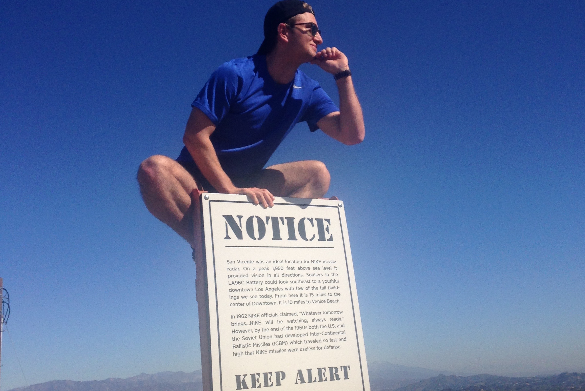
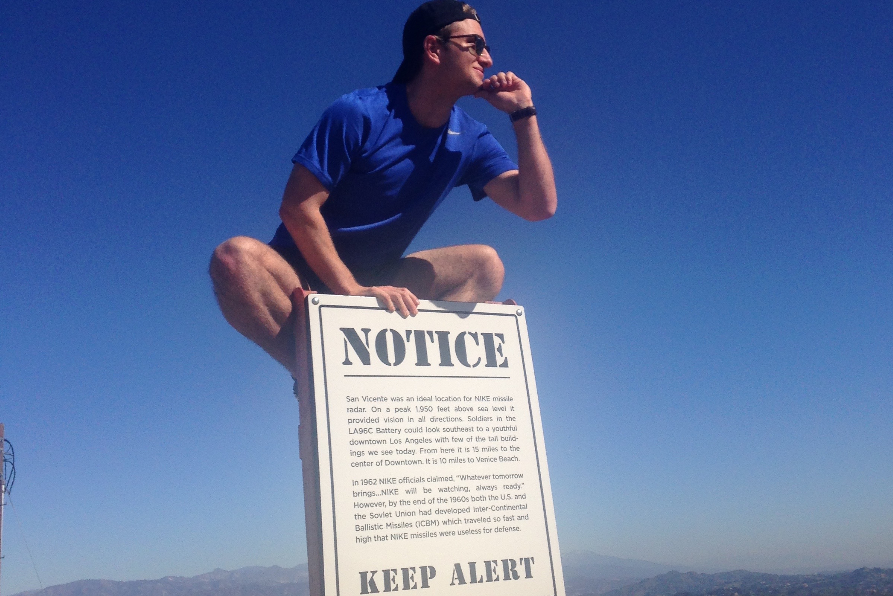
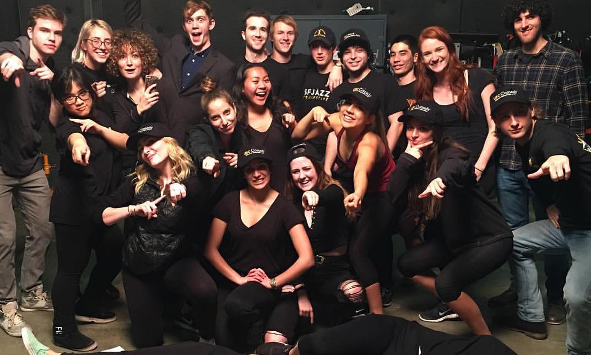
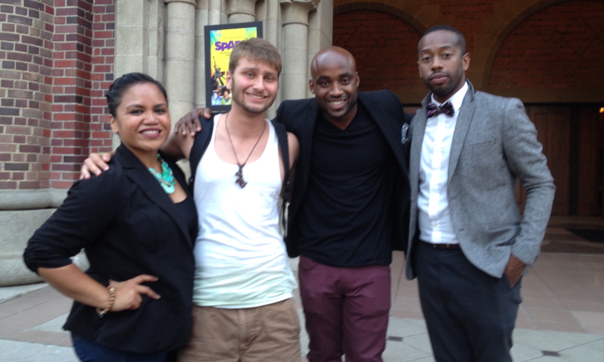
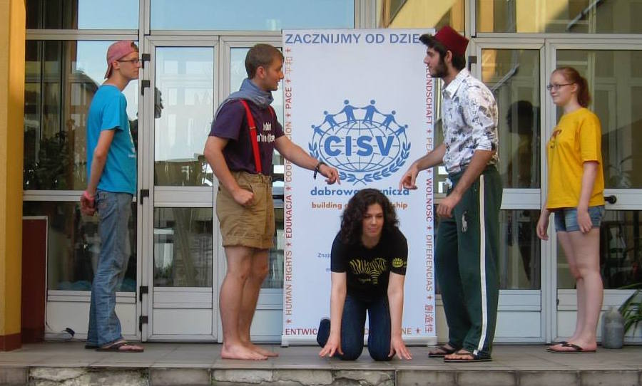
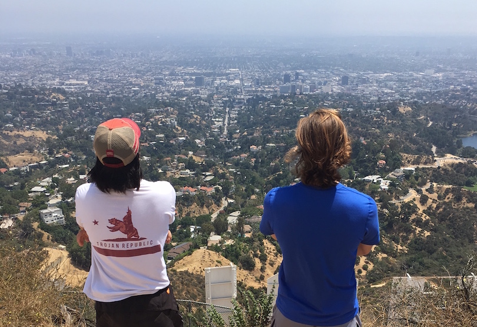
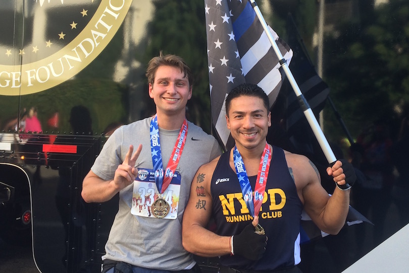

My main passions can be broken down into three groups: learning and exploring, helping others, and healthy living.
To illustrate my commitment to exploration and education, here’s a list of some of the things I haven’t mentioned elsewhere on this site that I’ve done in the past few years:
Perform with a troupe of fire jugglers, compete with a competitive Korean Hip-hop dance team, write and perform slam poetry at open-mic nights near campus (and meet some of my favorite poets at book releases and slams in New York and LA), produce and crew a live sketch-comedy show, turn an acoustic guitar and a stress ball into a controller for video games, travel to 8 countries outside of the US, pursue my quest for the best coffee shop in LA (still looking, though The Alcove in Los Feliz is my current winner), and work as a product manager for USC’s startup incubator LavaLab.
I have read a variety of psychology books on the subjects of decision making, business, and interpersonal relationships (ask me which!), I have taught myself how to use a variety of game engines and programming languages (most recently with HTML & CSS for this website), and I have learned how to solder (mostly for Arduino), weld, throw pottery, and develop film photography.


I really enjoy helping people be their best selves
I have been actively involved in the New York chapter of a non-profit international peace education organization, CISV, for about 8 years, including serving as president of the junior board, where I organized movie-night fundraisers, designed and sold merchandise, conducted recruitment and informational sessions, and led the planning of two biannual weekend-long camps for over a hundred participants. Since moving to Los Angeles I have organized and participated in beach cleanups for Autism Speaks, rent-a-poet fundraisers, and I have volunteered on countless sets for student productions.


Sleep is the cornerstone of a healthy life, but we don't have a lot of time and coffee is a pretty good substitute
I’m a big fan of healthy living, even though my favorite food would have to be nachos. I eat more Greek yoghurt, spinach, and kale than anyone I know. I have run two half-marathons fundraisers to honor all first responders (hoping to run my third this year!), and can frequently be found running at the track, swimming laps at the pool or biking between all of the places I’m trying to simultaneously be. I’m still trying to perfect my sleep schedule to maximize my energy and time awake, but until that time I’ll rely on juice (and coffee) to give me that extra boost.


B.A. in Interactive Entertainment and minors in Business Finance and Business Entrepreneurship, but I’m confident to say I will never not be a student (at least in terms of mentality).